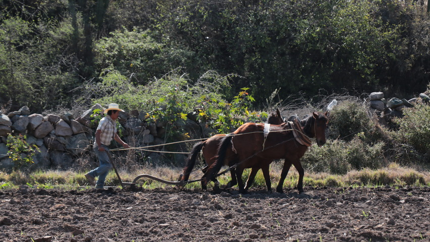

Visión
Visión
close
Convertirnos en un agente de cambio para el campo mexicano mediante la integración de la robótica y los sitemas inteligentes en cientos de invernaderos y parcelas, contribuyendo así al desarrollo de la agricultura de precisión.
 Objetivo
Objetivo
Objetivo
close
Reducir en un 60% la carga de trabajo físico del personal que labora en el sector de agricultura de mercado, por medio de la implementación de un Vehículo Modular Autónomo.